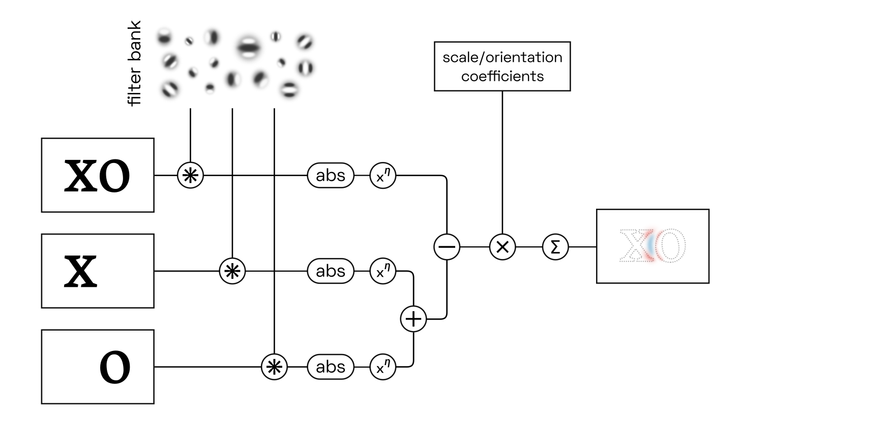
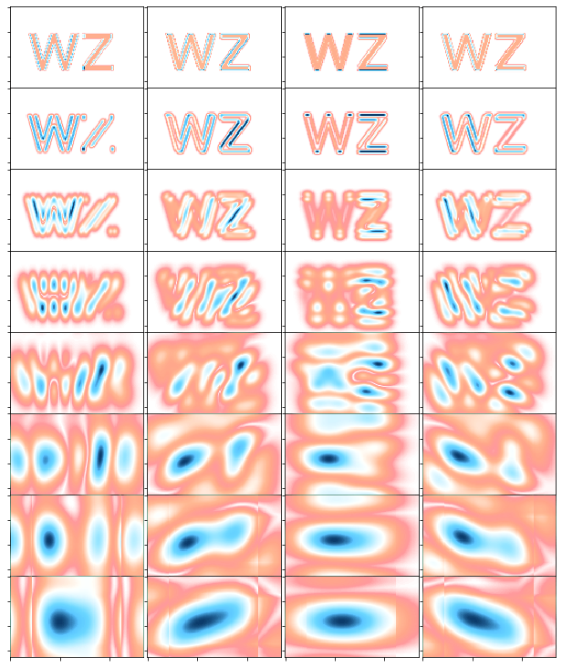
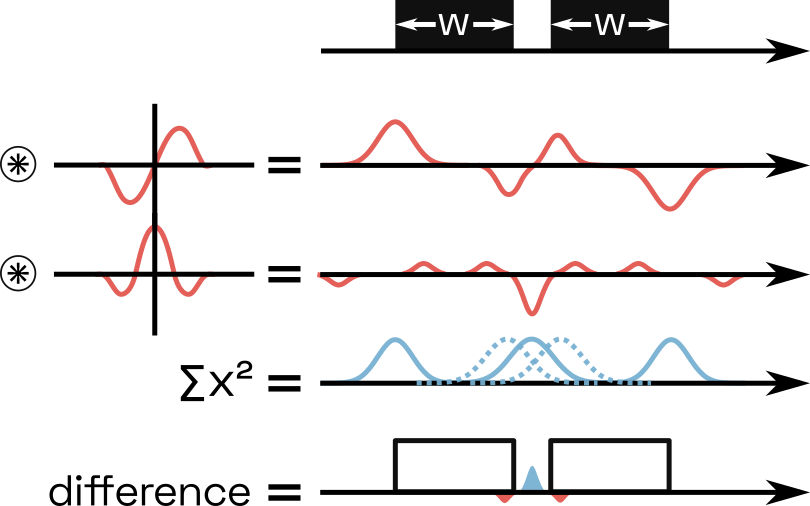

YinYangFit ☯
A letterfitting model inspired by biology
Overview
There are three parts to this project:
- An explanation of the model, updated regularly as I refine it. (You’re reading this at the moment.)
- A Jupyter notebook hosted on Google Colab, which I use to experiment with different variations on the model. I will make the notebook public soon. Note that I’m using it as a live-coding environment, so don’t expect clean code.
- A letterfitting tool designed for end users. This will probably take the form of a Python script, perhaps with a simple browser interface, which takes in any font file and adds spacing and kerning values according to the model. This doesn’t exist yet.
Acknowledgements
A big thank-you to Google for their generous funding of this research project.
Project plan
- Early October 2019: publish basic concept
- October-November 2019: publish Colab notebook
- Sometime, hopefully in 2019: converge on a satisfactory model
- Late 2019 / early 2020: build and publish letterfitting tool
Contents
- Abstract
- A good fit: what does that mean?
- Exisiting letterfitting tools
- What can vision research teach us about letterfitting?
- Models of the visual cortex
- Building a multi-scale letter pair analyzer
- Extending our model: lateral inhibition and divisive normalization
- Results (check back soon!)
- Parameter tuning (check back soon!)
- YinYangFit, the tool (check back soon!)
Abstract
This is a long article, so it’s helpful to understand the central hypothesis before diving in. An excessively loose fit (left) results in full activation of letter detectors and excellent letter localization, but does not make full use of the parallel word recognition bandwidth and instead risks disrupting word recognition with spaces that may be mistaken as word spaces. An excessively tight fit (right) results in neighbour-neighbour interference (red) and suboptimal activation of letter detectors, as well as increased overlap between perceived letter positions.
- The brain recognizes individual letters, using neurons that respond to the presence or absence of their constituent geometric features in space, e.g. lines, corners, or curves.
- The detected letters are not perceived to be in precise positions and then combined into a word via direct orthographic pattern-matching against a learned lexicon. Instead, they are perceived to be in approximate positions, likely relative to the beginning or end of the word and/or the visual fixation point. Over tens of milliseconds, and taking into account the perceived word length as well as semantic expectations, a neural consensus forms in favour of the most likely word. This implementation allows you to understand misspelled text. The exact neural architecture at this level has not yet been conclusively identified.
- Pairwise letter spacing interacts with this mechanism by introducing a tradeoff: On one hand, a tight fit increases the information density and ensures that words are perceived as a whole entity. On the other hand, it reduces the confidence in letter positions and, most importantly, reduces the certainty about the identity of the letters themselves. This is because the presence of neighbouring letters optically interferes with the detection of the low-level features that make up each letter, and this interference worsens with proximity.
- Therefore, a reasonable letterfitting algorithm will select the smallest possible distance, while not exceeding a critical limit of neighbour-neighbour interference.
- We can approximately quantify this interference by computing the difference between the simulated neural responses to letter pair vs. the response to the letters when viewed individually.
In this article, we will first explore a bit of history, a bit of basic vision science, and then delve into the technical details of the kind of computational neuroscience models that allow us to estimate the interference between letter pairs (and to build a tool to do that for us, automatically).
A good fit: what does that mean?
Spacing and kerning type (hence: “letterfitting”) is painstaking work. Heuristics exist, and some of them have been implemented in software, but letter shapes are so varied across typefaces that extensive manual adjustments are often still required. I provide a review of some of the current heuristics below.
Looking for new approaches can feel like groping in the dark. Often, heuristics designed to accommodate one font style perform poorly with other styles.
Let’s take a step back and ask: what does it mean for letters to be well-fitted? And while we’re at it: what does it mean for objects to be well-knolled? And what does it mean for a kanji to be well-balanced?

Cognitive scientists have built up a large repertoire of ideas about how vision works in the brain, and I believe that those ideas can guide us towards a clearer understanding of what it means for shapes to be “too close” or “too far” – and towards better letterfitting tools, of course.
Existing letterfitting tools
Most existing approaches operate either on the distance between stems, or on the area of the gap between them. Some are hybrids, more complex, or unpublished; finally, there has been some experimental work using neural nets:

Fixed-distance methods: A family of approaches that insert pre-defined distances between letter pairs. In their simplest incarnation, these heuristics are equivalent to simply adding sidebearings to every letter, without any kerns. Kernagic, inspired by Frank Blokland’s research, uses heuristics to identify stems or stem-equivalents (such as the round sides of an o) in every letter shape, and then aligns them. This works reasonably well with very regular type (think blackletter), but manual adjustments are usually required. Less well known is Barry Schwartz’ anchor point implementation of what amounts to basically the same idea. Adrian Frutiger, Walter Tracy and Miguel Sousa have devised similar systems, described in Fernando Mello’s MATD thesis. The legendary Hz-Program is also included in this category, as its patent application reveals that letter pair distances were simply stored in a hardcoded table.
Gap area quadrature: A family of algorithms that attempt to quantify and equalize the perceived area of the inter-letter gap. The crux, of course, lies in deciding where the gap ends. HT Letterspacer, the crudest one of these tools, considers everything between baseline and x-height (modulo some minor refinements). Simon Cozens’ CounterSpace uses blurs and convex hulls to more effectively exclude regions that arguably don’t belong to the gap (such as the counter of c). My own Electric Bubble model measures Euclidean instead of horizontal distances, but imposes geometric constraints that produce similar results to CounterSpace. CounterSpace currently wins in terms of performance-complexity ratio but it, too, struggles to fit certain letter pairs.
Other shape-based methods: These include more exotic approaches, such as stonecarver David Kindersley’s “wedge method” from the 1960s, which operated on letter area moments of inertia (and didn’t really work), and iKern, which produces great results but, just like Adobe’s Optical Kerning feature, remains unpublished. Last but not least, the TypeFacet Autokern tool identifies parts of letter outlines that jut out horizontally, and adds kerning to compensate, based on a few parameters.
Neural nets: Yes, we can train convolutional nets to recognize images of well-fitted and poorly-fitted type. Simon Cozens has built several versions of his kerncritic model (formerly AtoKern), and the recent ones perform surprisingly well on many (if not all) pairs. While neural nets are fascinating, they tend to be black boxes: we can only make guesses at how they work, and we cannot tune their behaviour to suit our taste. This problem holds not just for convolutional nets, but for statistical function approximators in general; I will not discuss them further in this post.
Honorable mention: Bubble Kerning is a proposal that type designers draw a bubble around every letter, such that software can automatically find pair distances by simply abutting the bubbles. While this isn’t technically a letterfitting heuristic at all, it’s still worth mentioning as a neat idea that could perhaps save designers some time. Toshi Omagari has built a Glyphs plugin.
What can vision research teach us about letterfitting?
Flippantly speaking, much of vision research is about designing optical illusions and testing whether or not we fall for them. And whenever we do, we get to propose neural architectures that might explain the effect – and then run expensive fMRI and EEG studies to bolster our confidence and discredit competing theories.
Decades of such experiments have produced a wealth of literature, which can be summarized as follows: in order to maximize object detection performance, our brain first enhances incoming imagery using what amounts to a set of Photoshop filters: contrast normalization, sharpening, edge detection, and so forth. These filters are implemented as amplifying and inhibiting connections between neurons, and particular artificial patterns can trick these networks into funny, unexpected behaviour – that’s what we’re looking for.
Crucially, the first set of neurons processes the image by detecting lines and edges at multiple scales: some filters pick out fine details, others larger structures. Any objects, including letters, are recognized based on the presence of their features across multiple scales.
Letters are very simple structures, so in order to explain letterfitting (or kanji design), the following theory may be enough to produce good results:
Fitting letters too tightly attenuates some of their features at medium and larger scales (compared to standalone letters). This slows down letter recognition.
Fitting letters too loosely creates saliency in the gap between the letters at larger scales, lowering the signal-to-noise ratio and slowing down word recognition.
To test this hypothesis, we need a reasonably accurate software model of the early stages of our brain’s visual processing pipeline.
Models of the visual cortex
Illustration of some receptive fields of these so-called “simple cells” in the primary visual cortex (V1).As you are reading these words, image data from your retina flows up your optical nerve into the side of the thalamus in your brain, from where it gets routed to the visual cortex near the back of your head. Each neuron there combines the input from a few neighbouring photoreceptors in your retina. The specific set of inputs is chosen to allow each neuron to respond to a small, meaningful feature at a particular location in your field of vision – for instance, a small dark-light edge angled at 45 degrees. Generally, neighbouring neurons correspond to neighbouring locations on the retina (retinotopicity).
To model the output from simple cells sharing a particular spatial frequency, orientation, and phase – let’s call that a channel – we can simply convolve the input image with a kernel corresponding to the receptive field. Popular mathematical functions used to generate such simulated kernels include Gabor patches, differences/derivatives/Laplacians of Gaussians, and many others – they all look like the sample receptive fields above. None of them are perfect reproductions of reality, but the error is usually negligible. For practical reasons, convolution is typically implemented as multiplication with a complex-valued filter in frequency space, producing a complex-valued output. To obtain real-valued, positive numbers corresponding to neural firing rates, we can rectify the resulting complex numbers in each of the four cardinal directions (Re, –Re, Im, –Im).  The output of the convolution is complex-valued.
The output of the convolution is complex-valued.
Doing so for an array of scales and orientations produces a three-dimensional tensor (scale, orientation, phase) of estimated simple cell responses at each location of the input image.
Some cells exhibit more complex behaviour, however. Although they are tuned to a specific frequency scale and orientation, they will respond not just to one phase, but to adjacent phases as well. Some even fire in response to any phase, as long as the input matches their scale and orientation. These cells are called complex cells. Because they are phase-agnostic, their output is modelled as the absolute magnitude of the complex-valued convolution results, often called the local energy. In reality, simple and complex cells lie along a spectrum of phase specificity. A very recent Korean paper has a super neat explanation for that, but it seems that there’s even more to the story, as complex cells seem to change their simpleness index in response to their input as well.
Fully complex cells – i.e, phase-free values – are used exclusively in many computational vision models. That may not always be justified, but it works well enough with the kind of artificial images typically used in vision studies. For reasons discussed below, we will also work with complex cells for our letterfitting tool.
Cognitive scientists are confident that the above is a largely correct description of the lowest-level cohort of neurons in the primary visual cortex. What happens next, however, is less certain. These simple and complex cells don’t just pass their outputs up to higher-level brain areas; they also interact with one another, electrochemically stimulating and/or muting nearby cells in proportion to their own activity. What’s more, neurons from higher-level areas can also “reach down” and modulate perception as it is still taking shape. This really means that our learned expectations directly shape our experience, so it’s not unlikely that your familiarity with the Latin script and English orthography subtly affects your perception of a font’s metrics. Modelling that is hopelessly out of reach, of course.The waves of electricity that flash through these inscrutably connected networks are, in aggregate, responsible for the experimental findings: local contrast normalization, contour pop-out, and so forth. These don’t necessarily happen in sequence, but rather in parallel, until the electrical oscillations settle into a stable pattern for some tens of milliseconds before new information comes in.
Of course, that biological complexity hasn’t kept generations of clever PhD students from inventing simple(r) formulas that can reproduce the experimental results without simulating the temporal dynamics of the whole network. Such a model is what we will use to predict how the distance between a pair of letters affects their appearance relative to how they appear individually.
Although I do not provide a literature review here (perhaps in a future version?), I strongly encourage interested readers to dig into the huge variety of models people have come up with. A great place to start is this 2011 review of the last 25 years of research by Norma Graham, followed by Michael Morgan’s review of image features.
Building a multi-scale letter pair analyzer
Let’s start with a very basic energy-based version of our letterfitting model, and build on it gradually. Here it is:

This most basic version of our model simply convolves our three images – i.e., the pair image, and one image of each individual letter – with our filter bank. We then take the absolute magnitude of the output and square it, simulating nonlinearly-activating complex cells tuned to various frequency scales and orientations.
Finally, we simply take the difference between the pair image output and the two single-letter outputs. We can scale the values in each scale/orientation channel according to our preferences, if we like, and then sum all channels at every location. This will allow us to see the positive and negative interference caused by placing the two letters next to one another. Generally, we will find positive interference in the gap, and negative interference on and around the letters themselves.
Before we build a more complex model, we should take a moment to understand how this interference happens.
 One-dimensional view. For simplicity, let’s collapse everything into a single dimension. If you like, imagine that you are looking at a section view of a lowercase l, as shown on the right. Next, consider the responses of various one-dimensional wavelets when convolved with this function:
One-dimensional view. For simplicity, let’s collapse everything into a single dimension. If you like, imagine that you are looking at a section view of a lowercase l, as shown on the right. Next, consider the responses of various one-dimensional wavelets when convolved with this function:

Local energy magnitudes of a pair image. The blue lines shows the local energy. Note that the odd filters (i.e. the real-valued components, or sine filters) respond to edges, while the even filters (i.e. the imaginary-valued components, or cosine filters) respond some distance away from an edge, and most strongly at centers, when both edges are the same distance away. Note also how their scale-dependence differs: odd filters elicit a full response at any edge, as long as they are smaller than the width w; even filters show no significant response unless their scale is approximately equal to w. If this isn’t immediately obvious, take a piece of paper and perform some convolutions by hand until it becomes clear.
We can compute the square of the magnitude to find the local energy. Because of the scale dependence of the filters, this energy peaks for edges at small scales, and for the centers of larger structures at coarser scales (see also the example on the right).
Now let’s add a neighbouring letter on the right, and see what happens to the filter responses. Just looking at the smaller one is enough to illustrate the point:

The dotted lines show what the local energy would have been, if the two letters had been convolved individually. The difference introduced by the neighbour-neighbour interference is shown at the bottom.
Take the time, with pencil and paper, to develop an intuition how the encroaching neighbour dampens some responses (particularly the edges) and amplifies others (particularly the gap). I have not found much discussion of this competitive phenomenon in the psychophysics literature, probably because it’s not inherently interesting outside of models like this one. This difference is at the heart of the proposed letterfitting model. It’s not a metaphorical construct of the kind that underlies other letterfitting models: it really exists in your brain as you are reading these words.
It’s worth appreciating the arithmetic behind the model as well. First, thanks to the linearity of the Fourier transform, we can obtain the convolution of the pair image by simply adding the complex-valued results of the two single-letter images, saving us one DFT round-trip. Next, you may question the necessity of the squaring operation. Well: for one, without it, the difference would always be negative Trivial triangle inequality: the magnitude of the sum of two complex numbers can’t exceed the total of the summands’ magnitudes.. And, as we will discuss momentarily, complex cells do in fact respond nonlinearly, and a squaring operation is a common model.
Another very important aspect of this model – to be exact, a consequence of our squashing of phase information into magnitudes – is that it works just as well with white-on-black imagery as it does with the conventional black-on-white. Of course, we wouldn’t want it any other way: we can read text regardless of its contrast polarity, which strongly suggests that the letter detectors in higher-level brain regions get most of their input from complex cells, rather than simple ones.
The very simple model described here is, in fact, able to produce a remarkably decent fit on most fonts simply by limiting the sum of the negative differences to a fixed amount. Of course, we must choose our scale/orientation coefficients well.
Extending our model: lateral inhibition and divisive normalization
As I mentioned above, cells don’t just take input from the retina and trigger higher-level neurons, analogous to a classic feed-forward convolutional network. No: in reality, cells also affect their neighbours, and even themselves. And because neurons are little physical tubes of flowing chemicals, those neighbourly interactions happen with miniscule delays, leading to incredibly complicated temporal dynamics. We can’t model those here!
What we can do, however, is improve on our basic model by vaguely approximating some of those neighbourly interactions on average. This puts us in an awkward position halfway between the actual biophysics and a higher-level signals-based description, and we must be careful not to stretch the approximations into too handwavy a territory. Nevertheless, everything described below comes straight out of the mainstream computational neuroscience literature, so it’s at least not known to be outrageously wrong.
Let’s start with a single neuron – say, a simple cell.
The most basic model relates the spiking rate of our neuron to the strength of its input as a simple linear function, known to deep learning practicioners as a ReLU:
This is, in effect, what our basic model uses (before the phases get squashed into a single magnitude, of course).
It turns out that real neurons tend to behave differently. At first, they don’t spike much at all. But once a certain spiking rate is reached, they’re physically incapable of going faster, saturating out:

One of the most popular equations This kind of sigmoid goes by many names: hyperbolic ratio, Naka-Rushton function, and others. to model this is: y = \frac{f x^k}{\beta^k + x^k} The f scales the curve vertically, k makes the kink steeper, and \beta shifts the threshold to the right. Look at how this function works: the numerator increases the firing rate, and the denominator decreases it. For relatively small values of x, \beta^k dominates the denominator and we’re basically dealing with a scaled-down version of fx^k (values of about 2 or 3 are common for k, which explains why we squared the magnitude in our basic model). Once x^k gets large enough though, \beta^k dwarfs in comparison, and we’re left approaching f. Note that this specific activation function is effectively never used in deep learning, both for historical reasons and because its asymptotic behaviour slows down learning.
Conveniently, having now described our neuron using this function, we can sneak some extra suppressive terms into the denominator, namely, the inhibition coming from our neuron’s neighbours:
y_i = \frac{f x_i^k}{\beta^k + \sum_j w_j x_j^k}
One of the models that has found some recent popularity is the second-order contrast (SOC) model by Kendrick Kay et al. It’s relatively simple and ticks many of the boxes that other filter-rectify-filter models don’t, and it even appears to predict fMRI responses quite well (bonus points!).
However, it was tested only at a single filter scale, whereas our hypothesis incorporates the agreement between feature detectors across multiple scales. We will therefore run the SOC model at multiple scales.
Quantifying the agreement between feature detectors across multiple scales isn’t a new idea. Researchers have written papers about this since the 1980s – the key terms are phase congruency and local energy.
(To be continued …)
Results
(Come back soon!)
Parameter tuning
(Come back soon!)
YinYangFit, the tool
(Come back soon!)